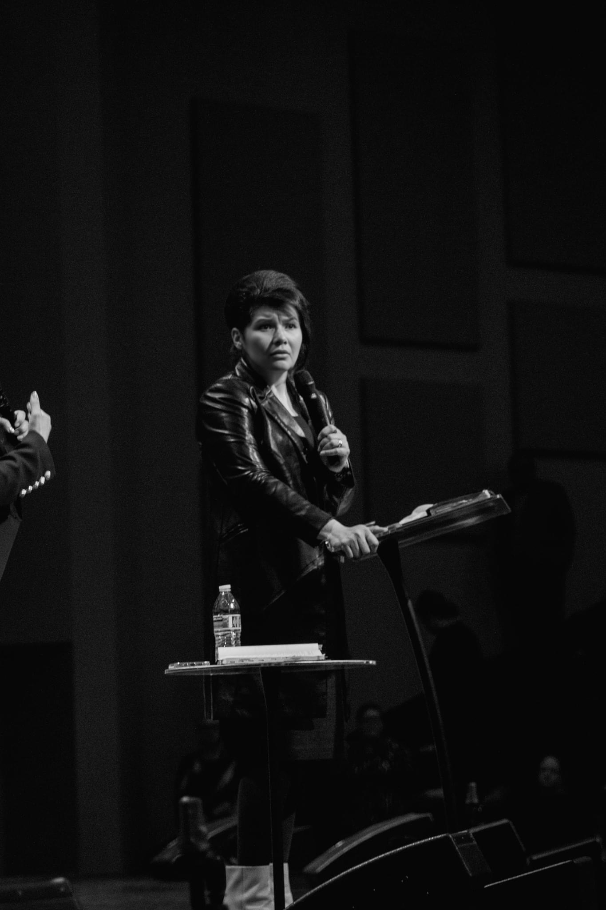
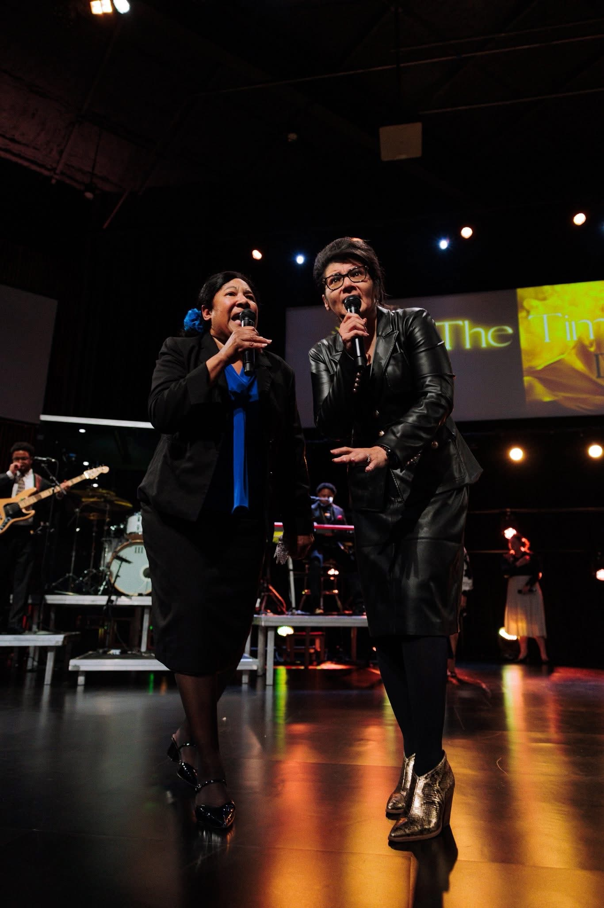

Women in Leadership
Seeking community and strength.
To restore, renew, and equip every woman's passion, purpose, calling, potential, and ministry.

Seeking community and strength.

Seeking growth and collaboration.

Who desires to deepen her relationship with God.
During the WMW International Conference, led by Dr. Jéssica Marques, my daughter, who suffered from chronic hip pain, received prayer and was instantaneously healed. I am forever grateful for WMW International—what a powerful ministry of faith and encouragement!

WMW creates a powerful space where women worship, get encouraged, and are empowered to live radically for God. It is a unique conference created to transform lives everywhere.

WMW strengthened my confidence to speak the truth in love. Discipleship with other women gave me the emotional wisdom and spiritual courage needed to be a bold witness for Jesus.

When my nephew passed away, Dr. Marquez made time to be by my side. Her love and compassion showed me the impact of serving others. WMW truly lives out 'Love your neighbor as yourself.'

Dios renovó mi corazón a través de WMW, inspirándome a crear grupos de oración globales. He sido fortalecida y bendecida al recibir mentoría y servir al crecimiento de otras mujeres.

So thankful for Dr. Jessica Marquez’s vision to mentor and train women who carry a burden for souls, awaken the Church, and prepare a generation for the coming of Jesus.

Attending WMW was so timely. I felt refreshed and revived by women who heard from God, leaving with invaluable memories and deep connections.

God gave me a vision reminding me that time is not an obstacle for Him. He can accomplish His purpose regardless of age or time of life. “My times are in thy hand” - Psalm 31:15

Every time I attend, the Glory of God fills the house. I came hungry and left full, hurting and left healed. WMW is powerfully anointed to minister to kingdom women.

WMW is a life-changing divine encounter launching individuals into their God-given destinies. Dr. Jessica Marquez’s vision continues to leave an indelible mark on generations.

Over the years, I have seen God use WMW International to reach and impact many through the Word of God. Through this ministry, women have been encouraged, prepared, and strengthened to walk confidently in their God-given calling, myself included.

Your generosity helps restore and equip women around the world.
Give Now